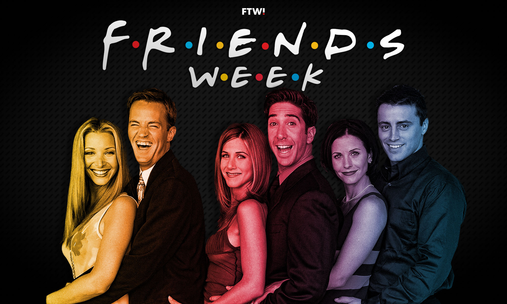

Friends
Friends is an American television sitcom, created by David Crane and Marta Kauffman, which aired on NBC from September 22, 1994, to May 6, 2004, lasting ten seasons.[1] With an ensemble cast starring Jennifer Aniston, Courteney Cox, Lisa Kudrow, Matt LeBlanc, Matthew Perry and David Schwimmer, the show revolves around six friends in their 20s and 30s who live in Manhattan, New York City. The series was produced by Bright/Kauffman/Crane Productions, in association with Warner Bros. Television. The original executive producers were Kevin S. Bright, Kauffman, and Crane.
Kauffman and Crane began developing Friends under the title Insomnia Cafe between November and December 1993. They presented the idea to Bright, and together they pitched a seven-page treatment of the show to NBC. After several script rewrites and changes, including title changes to Six of One[2] and Friends Like Us, the series was finally named Friends